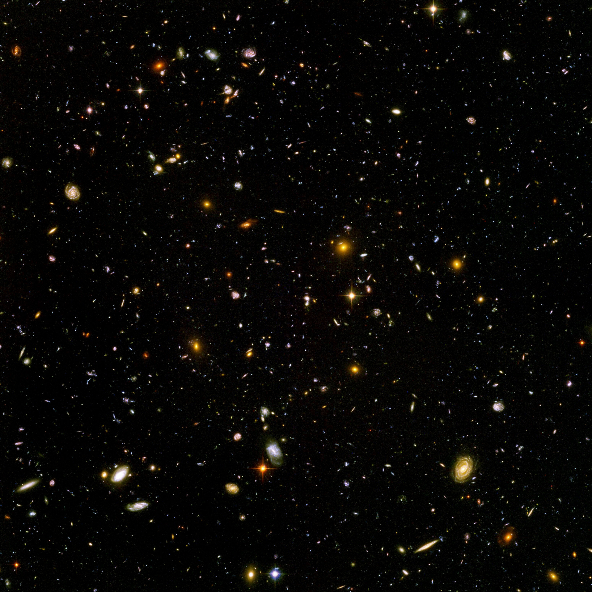
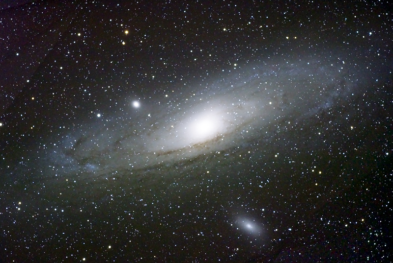

Definition: Das Universum, auch der Kosmos oder das Weltall genannt, ist die Gesamtheit von Raum, Zeit und aller Materie und Energie darin.
Anzahl Galaxien: ca. 2 Bio.
Alter: 13,81 ± 0,04 Mrd. Jahre
Masse (sichtbar): ca. 1053 kg
Mittlere Dichte: ca. 4,7 · 10-30 g/cm3
Radius: > 45 Mrd. Lj
Temperatur Hintergrundstrahlung: 2,725 ± 0,002 K

Das Universum ist alles, was wir anfassen, fühlen, wahrnehmen, messen oder erkennen können. Dazu gehören Lebewesen, Planeten, Sterne, Galaxien, Staubwolken, Licht und sogar die Zeit. Vor der Geburt des Universums gab es weder Zeit noch Raum oder Materie.
Der Raum zwischen Galaxien ist nicht vollständig leer, sondern enthält neben Sternen und Staubwolken unter anderem auch Wasserstoff-Gas.

Planeten kreisen um ihre Sonne und Sonnen kreisen um das Zentrum von Galaxien. Nach den physikalischen Gesetzen wäre zu erwarten, dass sich ein Himmelskörper umso langsamer bewegt, je weiter er vom jeweiligen Zentrum entfernt ist.
Beobachtungen und Messungen haben aber ergeben, dass sich beispielsweise die äußeren Sterne unserer Milchstraße viel schneller bewegen als ursprünglich errechnet.
Ein Erklärungsversuch der Astrophysiker lautet: Unsere Galaxie besteht aus viel mehr Materie als aus der der sichtbaren Himmelskörper. Diese Materie übt ebenfalls eine Anziehungskraft auf die Himmelskörper aus, sodass sie sich schneller bewegen können, ohne aus der Bahn zu geraten.
Diese Materie ist nicht sichtbar und bislang auch nicht experimentell nachzuweisen. Es ist auch unklar, aus was sie besteht. Dennoch muss diese sogenannte "Dunkle Materie" – so nehmen die meisten Wissenschaftler an – vorhanden sein.
Diese Seite wurde erstellt von Melis Kaya am 7.12.2020
Quellen: